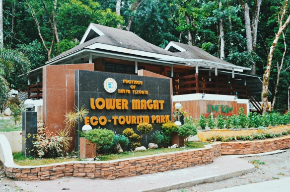

HOME
ABOUT US
DESTINATIONS
CONTACT US
Nueva Vizcaya Province
written by
Francis Escaner
ABOUT
Nueva Vizcaya is a province of the Philippines located in the region of Cagayan Valley Region in Luzon. Its capital is Bayombong. Nueva Vizcaya is often referred to as lowland Baguio because of its pleasant climate. The province has basically an agricultural economy with commerce, trade, and industry contributing to its growth and development.
LOCATION
FACTS ABOUT NUEVA VIZCAYA
The following are a few useful and interesting details about this province.
Province:
Nueva Vizcaya
Location:
16°29′N 121°09′E |
View Map
Year Founded:
1839
Capital:
Bayombong
Language(s):
Ilocano, Pangasinan, Tagalog, Gaddang, Isinai, English
Major Industries:
Agriculture (pomelo, ponkan, oranges, rice, corn, abd fruits), Mining (copper, gold, molybdenum, and pyrite), Fishing”
Known for:
Citrus Capital of the Philippines
CITIES & TOWNS
The
Nueva Vizcaya
province is divided into 15 Municipalities:
Alfonso Castañeda
Ambaguio
Aritao
Bagabag
Bambang
Bayombong
Diadi
Dupax del Norte
Dupax del Sur
Kasibu
Kayapa
Quezon
Santa Fe (Imugan)
Solano
Villaverde (Ibung)
FAQS
The following are the most frequently asked questions about the Nueva Vizcaya province.
Where in the Philippines is Nueva Vizcaya located?
Nueva Vizcaya is located on northcentral part of Luzon.
Is Nueva Vizcaya a city or province?
Nueva Vizcaya is a province.
What is the Capital of Nueva Vizcaya?
The capital of Nueva Vizcaya is Bayombong.
What is Nueva Vizcaya known for?
Nueva Vizcaya is known as Citrus Capital of the Philippines.
How do I get to Nueva Vizcaya?
There are several ways to get to Nueva Vizcaya, the most common being from Manila:
POPULAR DESTINATIONS
Bangan Hill National Park
Capisaan Caves
Dampol Bridge
Imugan Falls

Lower Magat Eco Tourism Park
Mt. Ugo
San Vicente de Ferrer Church
St. Dominic Cathedral